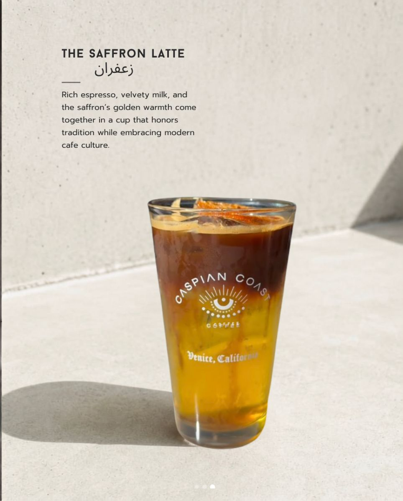
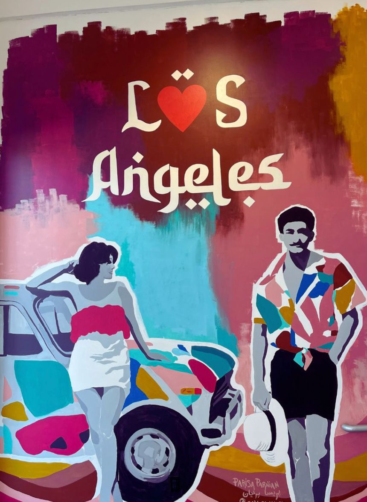

CASPIAN COAST
CASPIAN COAST
The Brand Book
Persian roots,California light, Venice soul
How Caspian Coast looks, sounds & feels — a sunlit café and a living room in Venice, California.
 The space · Main St, Venice
از ساحل خزر تا اقیانوس آرام
CASPIAN COAST
The space · Main St, Venice
از ساحل خزر تا اقیانوس آرام
CASPIAN COAST
The Brand Book
How Caspian Coast looks, sounds & feels — a sunlit café and a living room in Venice, California.
The space · Main St, Venice
از ساحل خزر تا اقیانوس آرام
Saffron, cardamom, rosewater, the nazar on every cup, and a host's welcome. Heritage carried west — worn lightly, never as a costume.
Espresso roasted in LA, citrus, salt air, the easy pace of the coast. Bright, clean, sun-warmed — never fussy.
A mural on the wall, neighbors at the window bench, records on Friday. Creative, communal, a little bohemian.
Our mark is the nazar — the Persian eye that wards off the evil eye and stands for protection, care and welcome. Radiating lashes, a dotted fan, a steady pupil. It is the heart of the brand: use it on cups, as a favicon, as a quiet watermark, and as a stamp of hospitality.
Clearspace = the height of the pupil on all sides. Never recolor the iris, stretch, rotate, or add effects. Minimum size 24px (digital).
CASPIAN COAST
Coffee & Culture
Primary · ink on cream
CASPIAN COAST
Coffee & Culture
Reversed · cream on ink
CASPIAN COAST
Coffee & Culture
Accent · cream on clay
Warm earth, saffron sun, and a deep Persian green — grounded by ink and cream.
You were right — the soft sage got lost. At eyebrow size on cream it goes muddy and timid. The fix isn't to drop green (it's our Persian-tile, our matcha) — it's to commit: deepen it to Caspian Pine for type and accents, demote the pale Pistachio to tints only, and let Clay lead the brand. Saffron and Nazar Blue do the small sparkle.
You weren't sold on this set in Cinzel — and you were right. Cinzel is an engraved, all-caps display face; asked to whisper a lowercase aside it goes stiff and shouty. Here's the same line in three warmer candidates. My pick is called out.
Speak like a host welcoming you into the living room. Personal, warm, second-person. "Walk in. Pour the tea. Stay a while."
Name the roots — saffron, the nazar, the Caspian — with pride and ease, never a history lecture. Culture as flavor, not as museum.
Say "a thread of saffron," "salt air," "cardamom cold brew." Concrete beats generic. We make you taste it before you order.
Short, sunlit sentences. Confident, a touch playful. No jargon, no hard sell, no exclamation-mark hype.
Real light, real hands, real cups. The mural, the spices, the coast.






Natural daylight, warm white balance, generous neutral backgrounds. Let the cup's eye logo face forward. Capture people, steam, hands, the mural. Crisp and clean.
No cool/blue filters, heavy vignettes, or moody underexposure. No sterile stock coffee. Don't bury the nazar or crop the logo awkwardly.
From the Caspian to the coast.
از ساحل خزر تا اقیانوس آرام